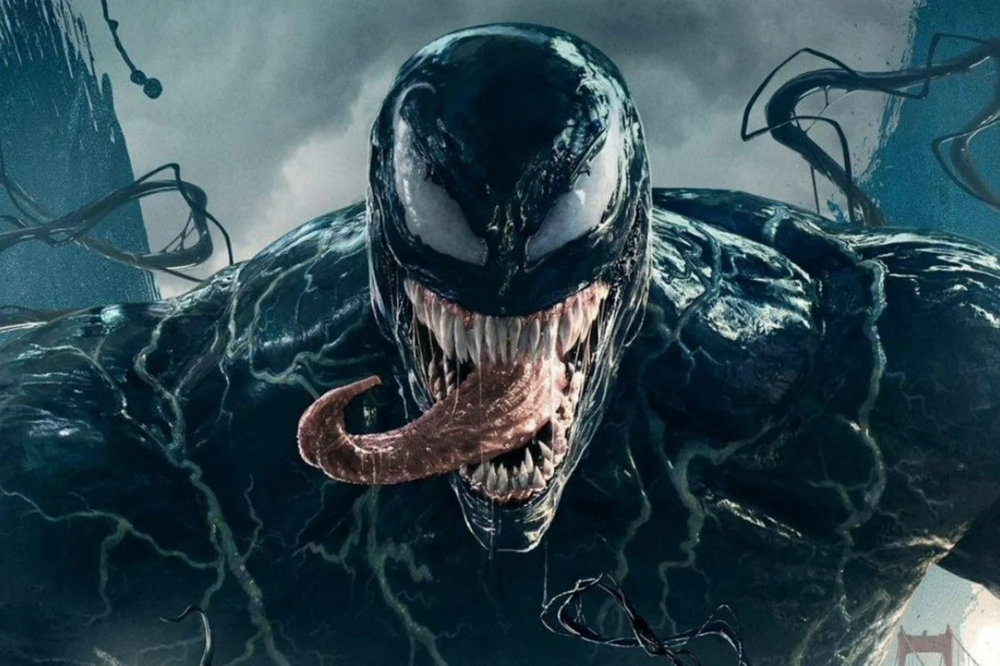

Мій улюблений супергерой-Веном
Веном один з улюблених супергероїв усіх підлітків світу

Основні факти
- Перша поява Венома відбулося в The Amazing Spider-Man # 300 (Травень, 1988).
- Спочатку виступав як суперзлодій, персонаж згодом набув статусу антигероя
- Веном — симбіот
Фільми
- 2018 Веном
- 2021 Веном 2: Карнаж
- 2024 Веном: Останній Танець
Додаткові ресурси
https://uk.wikipedia.org/wiki/Веном_(персонаж)
fffff
- f
fgg
- ff